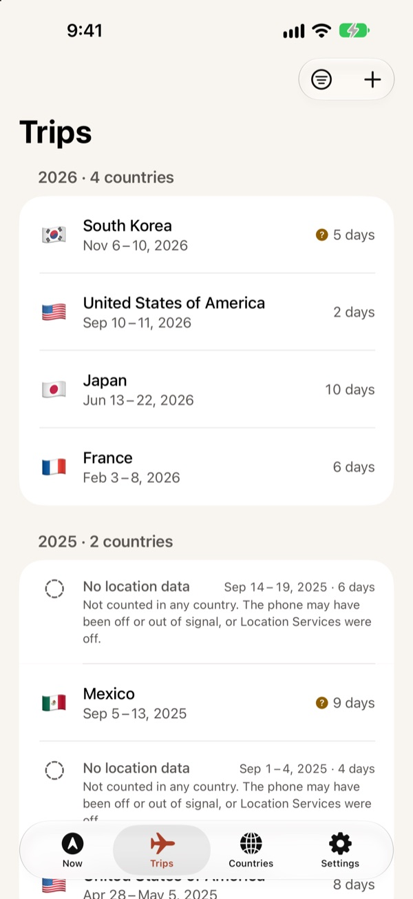
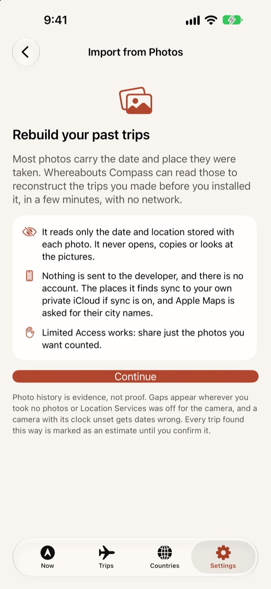
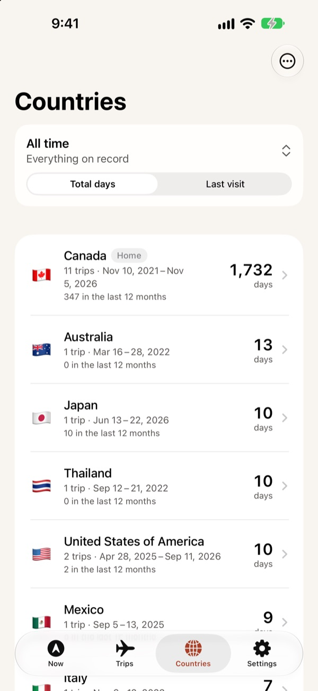
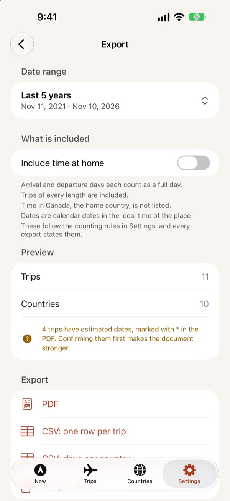

Your travel history, kept quietly in the background and ready when a form asks for it.
iPhone · iPad · Free
Coming to the App Store


Visa, green card, citizenship and tax forms ask where you were, and on which dates, for years back. Nobody can answer that from memory. Whereabouts Compass keeps the answer for you.



No account, no ads, no analytics and no third-party code. On the App Store its privacy label reads Data Not Collected. The country is worked out on your phone from built-in maps. The only network requests go to Apple Maps, to name a city and to draw the map on a trip's page. Read the privacy policy.